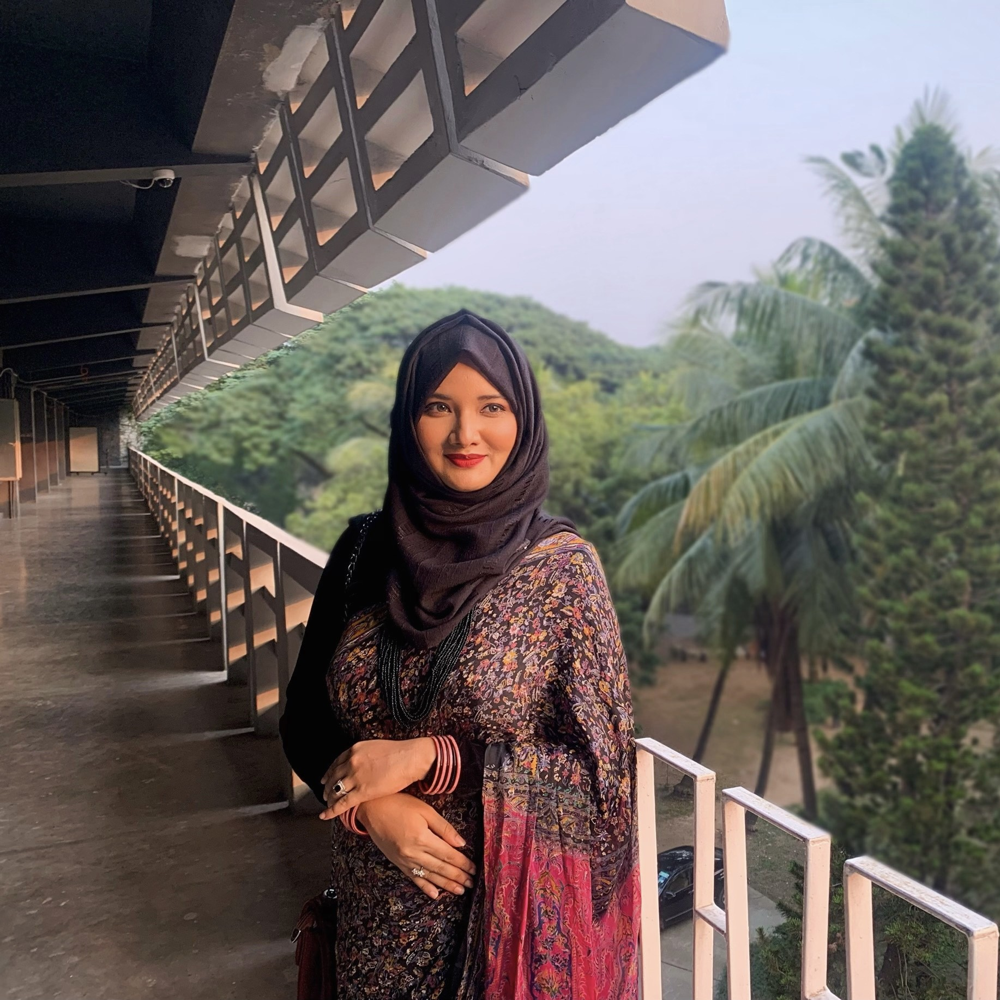
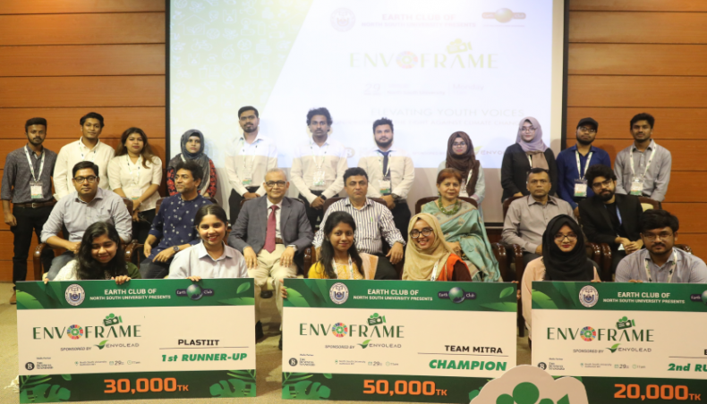
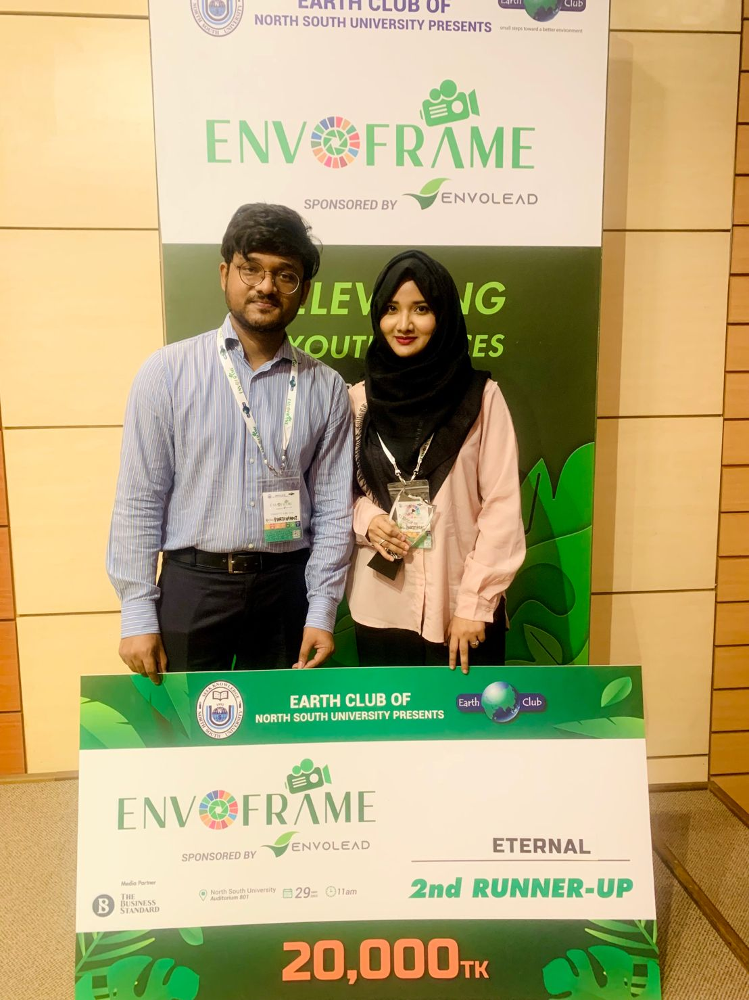
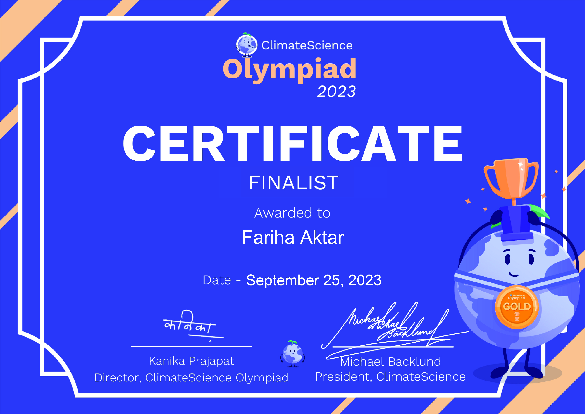

Fariha Aktar
An aspiring Urban and Regional Planner with a deep interest in sustainable development, climate resilience, and the integration of geospatial technologies in urban planning.
I hold a Bachelor’s degree in Urban and Regional Planning from the Bangladesh University of Engineering & Technology (BUET), where I’ve gained solid knowledge of urban planning theories and practices, combined with hands-on experience in geographic information systems (GIS), data analysis, and environmental modeling.
Research Areas
- Protected Areas & Urban Forest Conservation Management
- Land Surface Temperature & Urban Heat Island Analysis
- Urban Expansion & Growth Pattern in Developing Countries
- Remote Sensing & Geo-AI Based Urban Solutions
- Transit-Oriented Development (TOD)
- Travel Behaviour & Transportation Planning
- Climate Change Adaptation
Recent Projects
Ongoing Research
Publications
Forest Cover Loss in Protected Areas of Bangladesh: Drivers, Impacts and Way Forward ↗ (In Review)Thesis
Exploring the Reasons Behind Land Cover Change & Evaluating Management Strategies of a Protected Area in Bangladesh ↗Academic Projects
- Climate Change Adaptation ↗
- Participatory Planning Studio ↗
- Project Planning Studio ↗
- Transportation Planning Studio ↗
- Regional Planning Studio ↗
- Rural Planning Studio ↗
- Programming Studio ↗
- GIS and Remote Sensing Studio ↗
- Urban Planning Studio ↗
- Landscape Planning Studio ↗
- Site and Area Planning Studio ↗
- Social and Physical Surveys ↗
- Surveying and Cartography Workshop ↗
Education
Bachelor of Urban and Regional Planning (BURP)
Bangladesh University of Engineering & Technology (BUET) · 🗓️ 2019–2024
CGPA: 3.61/4.00
Skills & Tools
- ArcMap
- ArcGIS Pro
- QGIS
- Google Earth Engine
- City Engine
- R Studio
- Python
- PyTorch
- AutoCAD
- PTV Vissim
- Google Colab
- Adobe Illustrator
Professional Experience
Professional Training
Environmental Modelling & Environmental and Social Impact Assessment (ESIA)Organized by Institute of Water Modelling (IWM)
Key Modules:
- ESIA & Project Cycle | Policy & Legal Framework | Baseline Assessment
- Public Consultation & Stakeholder Engagement
- Environmental & Social Risk Assessment
- Mitigation Measures & Environment Management Plan Development
- ESIA Reporting & Environmental Clearance Process
- Water Quality Modelling, Air Quality Modelling & Noise Modelling

Achievements
- Presented my thesis findings regarding Land Cover Change in Protected Area and Its Impact on Vulnerable Community focusing Environmental Justice at Planning Week 2024: Just Urban Transition organized by Department of Urban and Regional Planning (BUET)
- 2nd Runner Up: EnvoFrame SDG Awareness Videography Competition, North South University (2023).
Videography on Ensuring Sustainable Development in Dhaka City ↗


- Finalist: Climate Science Olympiad (2023)

- Bronze Standard: Duke of Edinburgh’s International Award(2021).